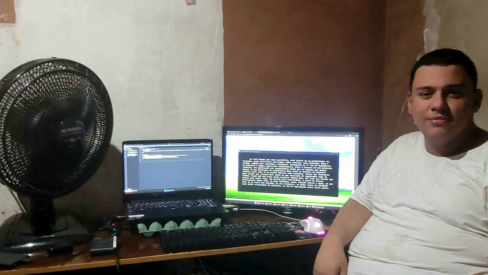
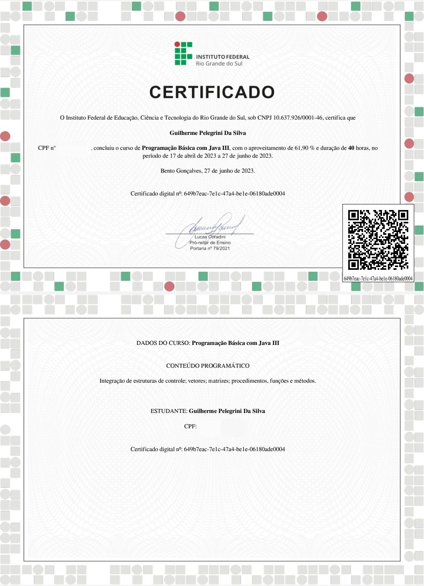
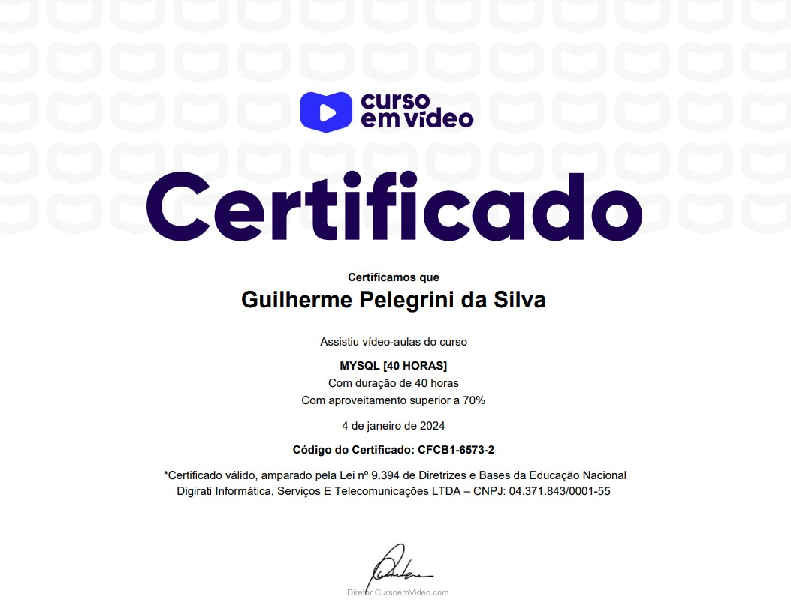

Sobre mim

Olá, meu nome é Guilherme Pelegrini da Silva, um apaixonado profissional de TI em desenvolvimento, atualmente no segundo ano do curso de Engenharia de Software na Unicesumar. Desde a infância, minha paixão pela área de TI foi moldada, desde a criação da primeira página em HTML até os mais recentes programas em C e Java. Acredito firmemente que possuo as habilidades e a determinação necessárias para me tornar um desenvolvedor e profissional de sucesso na área.
Programador Web
Concluí um curso abrangente que abrange tecnologias como HTML, CSS, JS, lógica de programação, projeto de sistemas e DER (Diagrama Entidade Relacionamento). Esse curso foi fundamental para a construção deste site, o qual desenvolvi em apenas dois dias, sem utilizar JS, enfatizando princípios de portabilidade e design.
Programação Básica em Java (I, II e III)

Realizei um curso dividido em três módulos, focado no início do aprendizado em Java. O curso abordou estruturas, lógica, sintaxe e aspectos léxicos da linguagem, introduzindo também bibliotecas e métodos básicos. Embora eu esteja aprimorando minhas habilidades, essa experiência proporcionou uma base sólida, e a vasta comunidade de Java na internet é uma fonte valiosa de informações e exemplos.
Android Studio e Kotlin
Participei de um curso na Udemy que explora as funcionalidades da linguagem Kotlin e da plataforma Android Studio. A linguagem Kotlin, semelhante ao Java, foi abordada desde a criação de funções até a operação simultânea das duas linguagens na mesma atividade. O curso também forneceu uma introdução básica ao SQLite, MongoDB e REST.
MySQL

Concluí um curso abrangente no Curso em Vídeo, que abordou o MySQL no Workbench. O curso ensinou a manipulação de linhas e colunas, criação de databases, compartilhamento de informações entre bancos de dados, PHPMyAdmin e prompt. Além disso, abordou conceitos fundamentais sobre como os bancos de dados funcionam, incluindo modelos como relacional, hierárquico e sequencial.